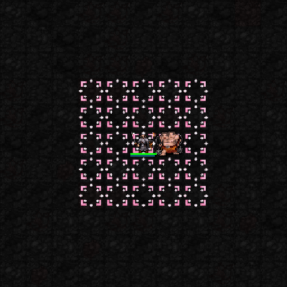

5성 · 신역 전개
성역을 7×7로 확대하고 피해 감소·해로운 상태 하나 정화. 현재는 장판이 넓어지는 차이가 중심.

capture05의 실제 SDL 테스트 전투장 캡처. 높은 신앙·고정 장비·자원으로 찍었으며 두 프레임을 느리게 반복합니다. 미코 효과는 이후 변경되지 않았습니다. 스이세이는 VFX04로 전체 승인되었습니다.
회복·상태 방어 성역 설치. 1성 해금 때는 3×3, 신앙 75 이상에서는 5×5. 이 캡처는 높은 신앙의 5×5 장면.
성역 테두리 화염과 외부 원거리 피해 완화. 현재 1성과 같은 성역 도트이며 불꽃 전용 시각 효과는 아직 없음.

성역을 7×7로 확대하고 피해 감소·해로운 상태 하나 정화. 현재는 장판이 넓어지는 차이가 중심.